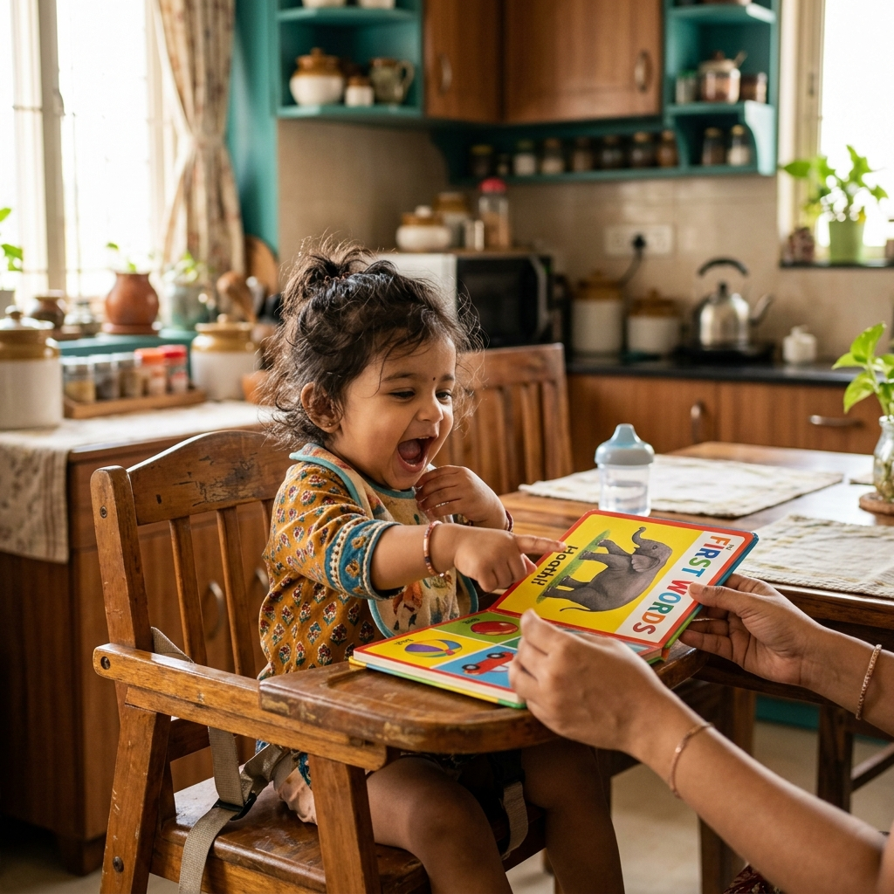

As babies approach 12 months, they begin to establish connections between certain sounds and things within their environment. "Mama" and "Dada" refer to two very specific people. "Dog" refers to that fluffy four-legged friend. These associations develop into first words, which typically begin to appear around 12 months — marking one of the most exciting milestones in early language development.
How do word associations develop? The brain connects a word with the action, object, or person that is present every time that word is used. Every time the child sees a spherical, smooth toy, someone says "ball". Their brain learns that the spherical object is "ball". Research suggests that the development of these associations requires joint attention — coordinated attention between caregiver and child toward a shared object. For children who have difficulties with joint attention (e.g., many autistic children), the development of these associations may take longer.
8–12 Months: First Words
By about 12 months, a baby's first word appears! This is typically the name of a familiar person (Mum, Dad). Other early words include names for familiar people (Nana, Pop) or objects (e.g., dog, ball, cup).
Expression Milestone: 1 word with a clear and accurate meaning.
First words are not always perfectly accurate in structure and pronunciation. As speech development co-occurs alongside language development, they are more like approximations of words — "doda" for "dog", or "anka" for "thank you" — but they are used with clear, consistent meaning.
Comprehension Milestone: While only using 1 word, the baby can understand between 3 and 50 words and will respond appropriately to them. This gap between understanding and production is completely normal in toddler language development.
12–18 Months: The Vocabulary Spurt
Once a child learns around 50 words, vocabulary begins to build more rapidly. This exciting phase is often called the "vocabulary spurt" or "word explosion".
Expression: A child can express, on average, 50–100 words. These words are mostly nouns and verbs, but represent a range of meanings:
- The name of an agent (mum, dog, cat, dad), object or possession (ball, cup, car), or location (chair, bed, home)
- An action (jump, clap, run)
- Rejection, disappearance, nonexistence or denial (no, gone)
Children at this age also develop the ability to use the pronouns "I" and "it".
By 18 months, the norm (achieved by 50% of children) is 50 words; the milestone (achieved by 90% of children) is 10 words.
Comprehension: Context is still needed for understanding. The child will understand what someone means when they name something the child can see, but they don't need familiar routines to support understanding.
18–24 Months: Combining Words
The vocabulary continues to grow, and the child begins combining words to create 2-word utterances around their second birthday. This is a landmark stage in child speech and language development.
Expression: On average, vocabulary at 24 months is 200–300 words. Children begin to express 2-word semantic relations — combinations where two words together express a new meaning that neither word conveys alone:
- "More milk" (recurrence)
- "Mummy go" (agent + action)
- "Big dog" (attribute + entity)
- "No bath" (negation + object)
The milestone (achieved by 90% of children) is 50 words at 24 months.
Comprehension: The child can now understand single words for objects they cannot see — they no longer need the contextual cues to support comprehension. They can also comprehend semantic relationships similar to the ones they express.
Children might also start to use "first phrases" — formulaic language units stored in long-term memory as single-meaning units: "Ready set go", "I love you", "I don't know". These are typically used for pragmatic purposes and social interactions.
Parent-Friendly Milestone Guide
Here's what to look for during your child's early linguistic development:
| Age | What You Might Notice |
|---|---|
| 8–12 months | Your child begins to understand that words have meaning. They may recognise familiar words such as their name, "mummy", "daddy", "dog", or "ball". Around their first birthday, many children say their first meaningful word. Early words may not sound perfect (e.g., "doda" for "dog"), but they are used consistently to mean the same thing. |
| 12–18 months | Your child's vocabulary is growing more quickly. They may learn new words every week and use words for familiar people, objects, actions, and routines (e.g., "mum", "ball", "car", "go", "no"). They also understand many more words than they can say. |
| 18–24 months | Your child continues learning new words and begins putting two words together to communicate simple ideas, such as "more milk", "mummy go", or "big dog". They can understand and talk about things that are not immediately in front of them and may use familiar phrases such as "I love you" or "ready, set, go!". |
When Should You Consult a Speech Therapist?
Consider scheduling an assessment with a pediatric speech-language pathologist if you notice:
- No recognisable words by 15–18 months
- Fewer than 10 words by 18 months
- No two-word combinations by 24 months
- A noticeable gap between what they understand and what they can say
- Loss of previously acquired words or skills (regression)
Early intervention in speech and language therapy can make a meaningful difference. At Rapture Therapy Centre in Rajarajeshwari Nagar, Bangalore, we provide evidence-based assessments and individualised therapy plans for toddlers showing signs of speech delay or language delay.
Is Your Toddler Meeting Language Milestones?
Our speech-language pathologists at Rapture Therapy Centre can evaluate your child's word development, comprehension, and early language skills with a comprehensive developmental assessment.
Book an Assessment